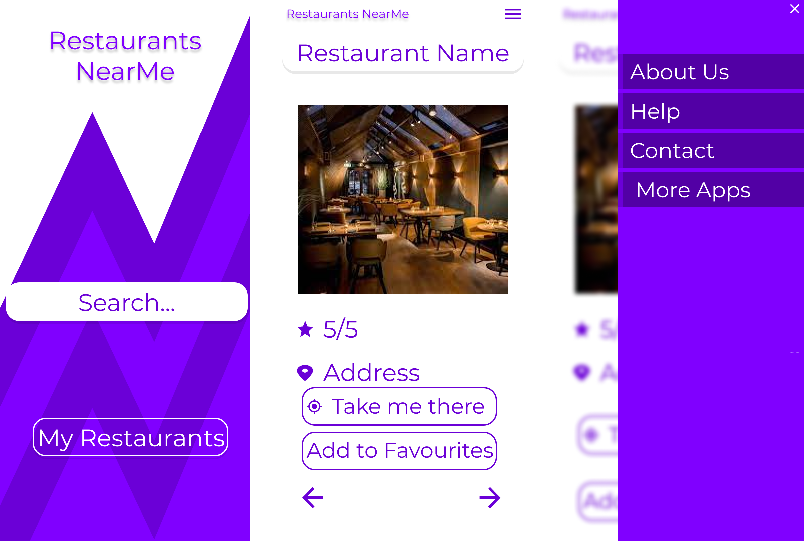

Restaurants NearMe App
Table of contents
Introduction
The purpouse of the app is to quickly provide restaurants near the user, show a rating, and directions
Design
Designed in figma.
https://www.figma.com/file/Y65IiC5h1EjlKDRbzHBegO/HCI?node-id=0%3A1

Product Functions
The following major functions are identified:
- Get ratings for a specific restaurant
- Add restaurant to favourite list
- Browse restaurants nearby
- Get directions to a restaurant
Map
The app has the following map:
QOC - Questions, Options, Criteria
How is the user first introduced in the app?
Firstly, the user sees one CTA button, to search for a restaurant, and another to check his favourites list.
How does the app interact with the user?
The interface is pretty straightforward, the user just needs to allow GPS tracking, or search for a restaurant by
hand
HTML5 PERSONAS
Maria Randall
44 years old
Rehabilitation counselor
Manchester, New Hampshire
Android
Learning something new makes me want to
use the app even more.
Goals
- I want to find out what other people have to say about a topic
- I want to see if anyone else has already found a solution to this issue
- I want to avoid boredom by talking with other people
Frustrations
- Fonts that are too thin to read
- Slow loading times
- Can't tell how many pages of results are available
Motivations
- Full activity notification system
- Being able to see lots of reviews before I make a decision
- Profile customization
Dawson Dixon
49 years old
Surveyor
Tyler, Texas
iPhone 8 Plus
When I leave a comment I need to see
everything I've typed out before submitting.
Goals
- Find recommendations based on my preferences
- Hoping to troll some people in the comments section
- Learn about something new
Frustrations
- Hate cluttered layouts
- Slow loading times
- Having recurring options speaks to my true laziness
Motivations
- I love the idea of being able to easily find a new online community
- Being able to customize what shows up on my home screen
- I want to discover new things
Ellis Schaefer
18 years old
Sports announcer
Columbia, Missouri
iPhone X
I love when I get badges and points for
just doing what I would normally do.
Goals
- Want to save my favorite options so I can check them at a later time
- I want to avoid boredom by talking with other people
- Share what I find with my friends
Frustrations
- Breaking down a process helps me better understand it
- Slow loading times
- Not being able to display more results per page makes searching take
longer
Motivations
- Being able to see lots of reviews before I make a decision
- undefined
- I want to be able to see what my friends are interested in